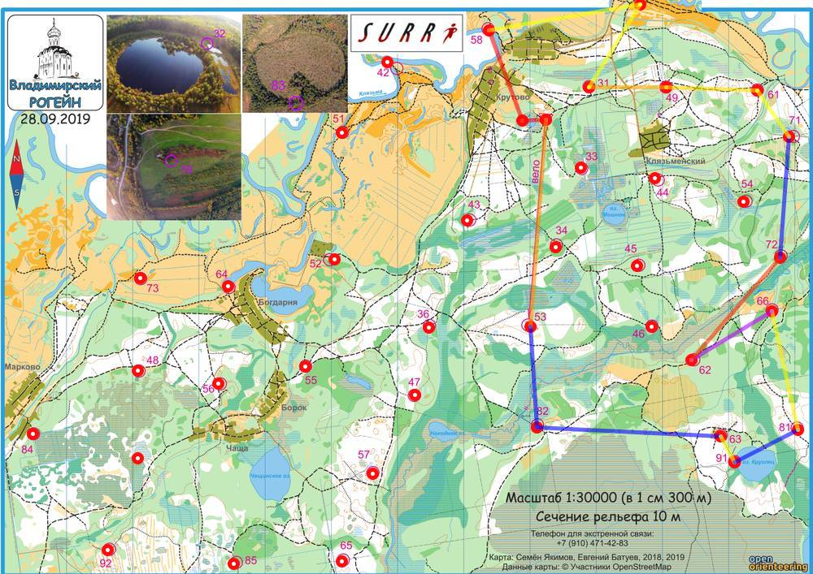

| Команда | Северный мох |
| Номер | 166 |
| Участники | Гусев Федор 1986 Мокрова Юлия 1988 |
| Группа | мжв |
| Место | 8 |
| Очки | 88 |
| Штраф | 0 |
| Время | 05:56:52 |
| Результат | 88 |
| КП | Время | Сплит | Расстояние, км | Темп, мин/км | Отметка, сек |
|---|---|---|---|---|---|
| С | 12:10:00 | ||||
| 53 | 12:44:33 | 00:34:33 | 3.122 | 11.1 | 6 |
| 82 | 13:34:37 | 00:50:04 | 1.521 | 32.9 | 1 |
| 63 | 20:38:06 | 4591:03:29 | 2.76 | >999 | 0 |
| 91 | 14:25:09 | -4591:47:03 | 0.446 | <1 | 3 |
| 81 | 15:05:21 | 00:40:12 | 1.082 | 37.2 | 4 |
| 66 | 15:19:37 | 00:14:16 | 1.815 | 7.9 | 2 |
| 62 | 15:52:50 | 00:33:13 | 1.405 | 23.6 | 3 |
| 72 | 16:20:40 | 00:27:50 | 2.037 | 13.7 | 6 |
| 71 | 20:38:15 | 4588:17:35 | 1.819 | >999 | 0 |
| 61 | 16:53:42 | -4588:15:27 | 0.844 | <1 | 4 |
| 49 | 17:05:18 | 00:11:36 | 1.371 | 8.5 | 8 |
| 31 | 17:17:10 | 00:11:52 | 1.16 | 10.2 | 8 |
| 59 | 17:27:21 | 00:10:11 | 1.473 | 6.9 | 4 |
| 58 | 17:39:45 | 00:12:24 | 2.305 | 5.4 | 4 |
| 32 | 18:01:54 | 00:22:09 | 1.454 | 15.2 | 14 |
| Ф | 18:06:52 | 00:04:58 | 0.346 | 14.4 | |
| 05:56:52 | 24.959999999999997 км | 15.1 мин/км |
